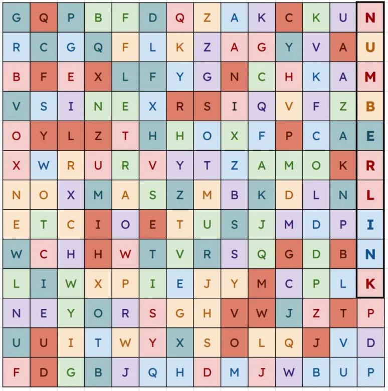
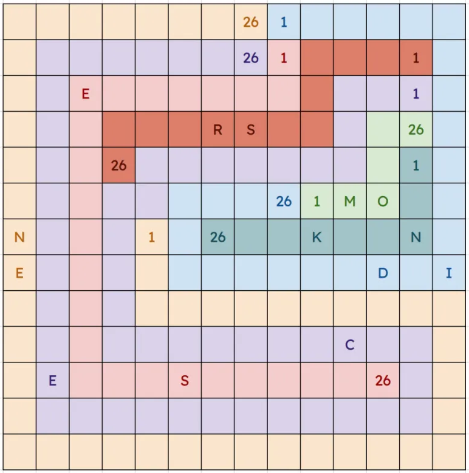
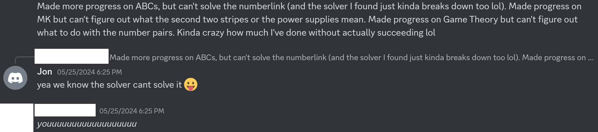

Solution: I Know My ABCs!
Answer: ABBEY
Written by Jonathan
The puzzle title hints at the alphabet, and looking at the grid, the roughly even first letter distribution count, together with certain words like Tango and Charlie, clues the first step: these are all sets of 26, and most specifically, all relate to the alphabet in some way. The first group of NATO phonetic alphabet should be pretty easy to spot. The rest can be roughly eyeballed into certain groups, such as names, or creatures, and Googling a few of them together should be enough to find the specific groups. The 7 groups are: words from the Matilda school song, NATO phonetic alphabet, Police code (note that depending on version some have Y as yellow), ITU alphabet, letters in Tom Thumb, Gashlycrumb names and Rogue monsters.

The flavortext hints at going from A to Z, which clues the next step: to connect the As to the Zs in the same group, a Flow logic puzzle/numberlink. As an additional clue, at this point each clue can be associated with a single letter of the alphabet. When looking at this grid, the word NUMBERLINK can be found hidden in the grid in the last column, for those who have identified all 7 groups fully but are stuck on the next step (specifically, you will need the Matilda connection to get this clue, which is the only group that doesnt only use the first letters and will often be the last group to be found). There is only 1 way to do this, as shown below. At this point, we should be concerned with the letters along each path that belong to each group of A-Z, and there are 2 in each group, confirming that we are on the right track. (Note that certain words might belong to multiple groups, but to make it unambiguous these words are clearly not on the right path)

The last step is to order these letters by path length in increasing order, and reading off the letters along each path from a-z in order gives the cluephrase MO NK SR ES ID EN CE, giving the answer ABBEY.
Author's Notes
If anyone is in London and has the chance to watch the musical, Matilda is really great! This puzzle testsolved easy enough to make the higher round early in testsolving, but playtested a lot harder than expected in later testsolving. Multiple testsolving teams went from “This numberlink is under constrained'' to “This numberlink is unsolvable”, hopefully this puzzle made everyone appreciate numberlinks :) I learnt about 2 months ago in another puzzle event that Nikoli actually had another puzzle genre called Arukone that was basically numberlinks but with letters rather than numbers, but this is not quite either, and numberlinks seem more popular than Arukones, and the intention should be clear.
